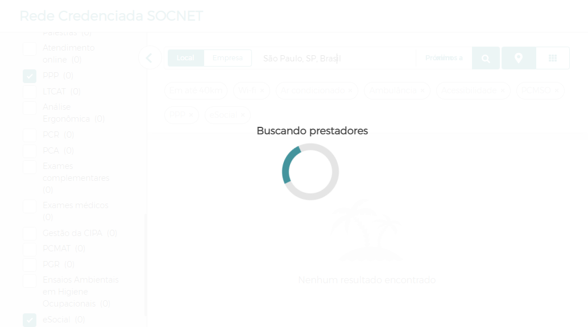
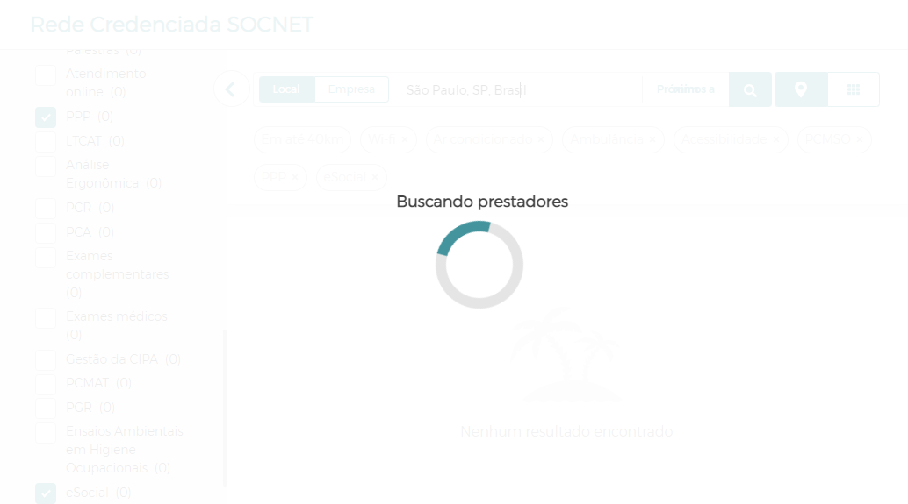
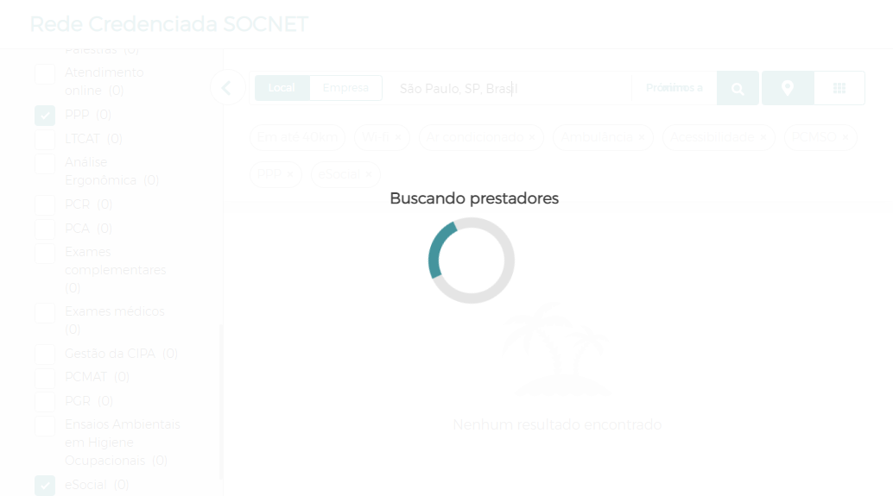
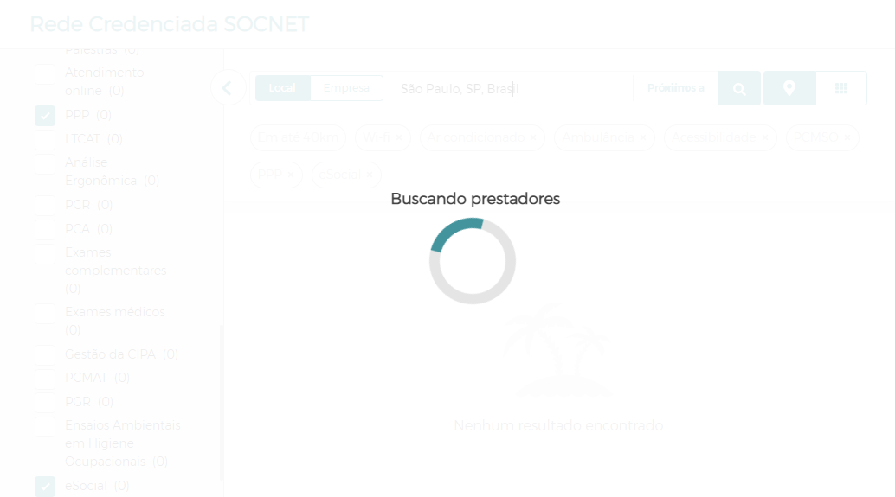

-
Buscar credenciado no blog
13:17:03 / 00:00:33:758 Fail
Buscar credenciado no blog
11.30.2022 13:17:03 11.30.2022 13:17:37 00:00:33:758 · #test-id=1Eu como um usuário do blog do Software Integrado de Gestão Ocupacional quero buscar credenciado na plataforma para visualizar seu perfilFailRealizar busca de credenciado no blogDado que estou na página do blog de saúde e segurança do trabalhosteps.BuscaCredenciadoSteps.AddScreenshot(io.cucumber.java.Scenario)imagesteps.BuscaBlogSteps.AddScreenshot(io.cucumber.java.Scenario)imageQuando acesso a funcionalidade Rede SOCNETsteps.BuscaCredenciadoSteps.AddScreenshot(io.cucumber.java.Scenario)imagesteps.BuscaBlogSteps.AddScreenshot(io.cucumber.java.Scenario)image E acesso buscar credenciadossteps.BuscaCredenciadoSteps.AddScreenshot(io.cucumber.java.Scenario)image
E acesso buscar credenciadossteps.BuscaCredenciadoSteps.AddScreenshot(io.cucumber.java.Scenario)image steps.BuscaBlogSteps.AddScreenshot(io.cucumber.java.Scenario)imageE preencho os filtros de buscasteps.BuscaCredenciadoSteps.AddScreenshot(io.cucumber.java.Scenario)imagesteps.BuscaBlogSteps.AddScreenshot(io.cucumber.java.Scenario)imageE seleciono o credenciado desejadosteps.BuscaCredenciadoSteps.AddScreenshot(io.cucumber.java.Scenario)steps.BuscaBlogSteps.AddScreenshot(io.cucumber.java.Scenario)Então visualizo o perfil do credenciadoStep skipped
steps.BuscaBlogSteps.AddScreenshot(io.cucumber.java.Scenario)imageE preencho os filtros de buscasteps.BuscaCredenciadoSteps.AddScreenshot(io.cucumber.java.Scenario)imagesteps.BuscaBlogSteps.AddScreenshot(io.cucumber.java.Scenario)imageE seleciono o credenciado desejadosteps.BuscaCredenciadoSteps.AddScreenshot(io.cucumber.java.Scenario)steps.BuscaBlogSteps.AddScreenshot(io.cucumber.java.Scenario)Então visualizo o perfil do credenciadoStep skipped
-
org.openqa.selenium.TimeoutException
1 tests
org.openqa.selenium.TimeoutException
1 failedStatus Timestamp TestName Fail 13:17:17 PM E seleciono o credenciado desejado Buscar credenciado no blog.Realizar busca de credenciado no blog.E seleciono o credenciado desejado -
org.openqa.selenium.NoSuchWindowException
2 tests
org.openqa.selenium.NoSuchWindowException
2 failedStatus Timestamp TestName Fail 13:17:37 PM steps.BuscaCredenciadoSteps.AddScreenshot(io.cucumber.java.Scenario) Buscar credenciado no blog.Realizar busca de credenciado no blog.steps.BuscaCredenciadoSteps.AddScreenshot(io.cucumber.java.Scenario)Fail 13:17:37 PM steps.BuscaBlogSteps.AddScreenshot(io.cucumber.java.Scenario) Buscar credenciado no blog.Realizar busca de credenciado no blog.steps.BuscaBlogSteps.AddScreenshot(io.cucumber.java.Scenario)
Started
nov. 30, 2022 01:16:59 PM
Ended
nov. 30, 2022 01:17:37 PM
Features Passed
0
Features Failed
1
Features
Scenarios
Steps
Timeline